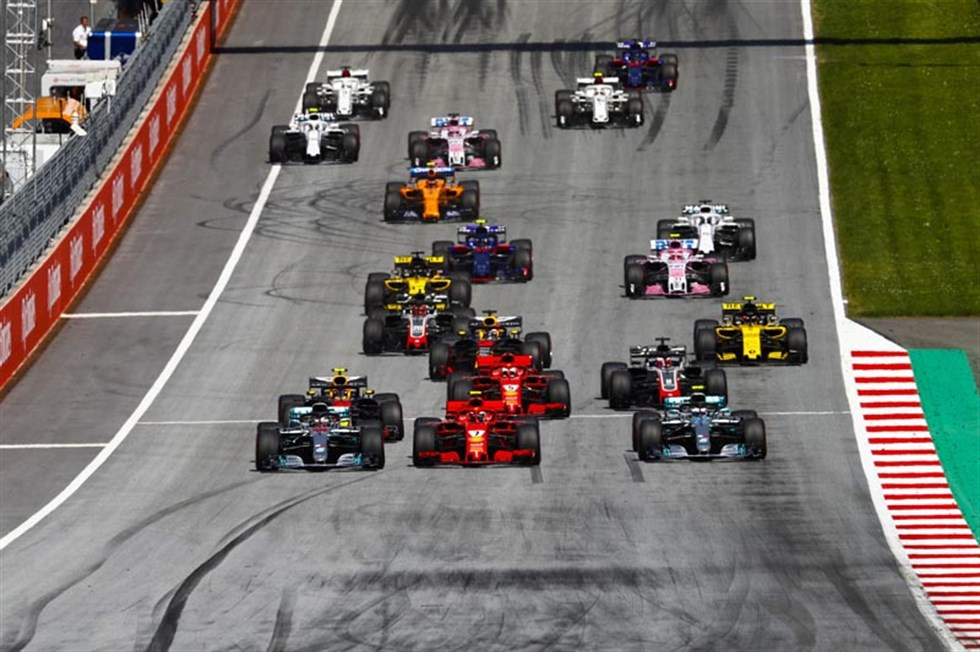
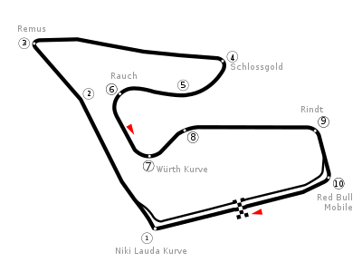

NAVEGUE
Home
Pilotos
Calendário/Tabela
Grand Prix
Construtoras
Últimas Notícias
GP da Áustria
SOBRE
A pista da Áustria, também conhecida como Red Bull Ring, é um circuito de corrida localizado na cidade de Spielberg, na Áustria. Foi inaugurada em 1969 e tem 4,318 km de extensão, com 10 curvas. A pista é conhecida por suas paisagens montanhosas e por ser uma das mais rápidas do calendário da Fórmula 1, com retas longas e curvas de alta velocidade que exigem habilidade e coragem dos pilotos. Além disso, a pista tem uma das curvas mais famosas da Fórmula 1, a "Remus", que é uma curva de baixa velocidade que leva a uma reta longa. A primeira corrida da Fórmula 1 na pista da Áustria aconteceu em 1970, e desde então tem sido um dos destaques do calendário da categoria.
Circuitos Utilizados
Red Bull Ring

INFORMAÇÕES DA CORRIDA

Localização
Spielberg, Áustria
Voltas
71
Percurso
4.318 km
Total
306.578 km
Curvas
10
Pole
Valtteri Bottas
Anos Disputados
41
Última Disputa
2022
Maior vencedor
Alain Prost
Última Corrida - Pódio
Charles Leclerc